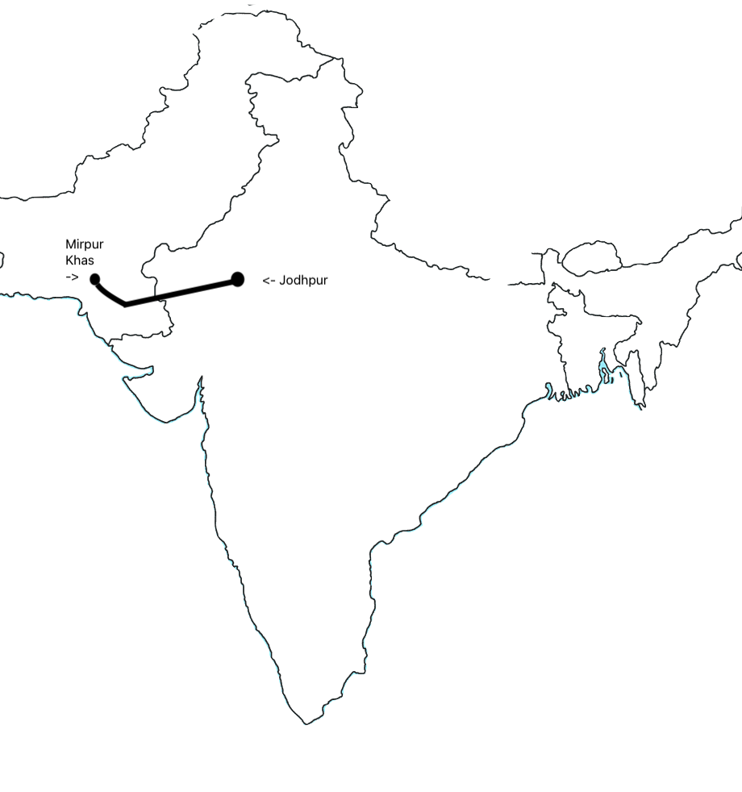

Nisha was walking through the country side, they ran out of water. Luckily Nisha and her family found a village as they were walking. This village had a well but there was a long line of people and her brother Amil was going to die. So Nisha’s family laid Amil against a tree and his dad went to try to find some more water because the well was dried up. Luckily, it started to rain and Nisha and her family were saved. (Hiranandani)
